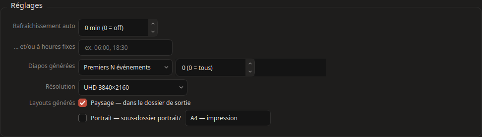
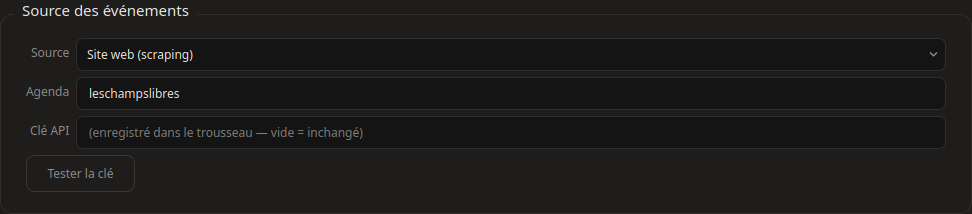
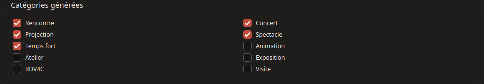
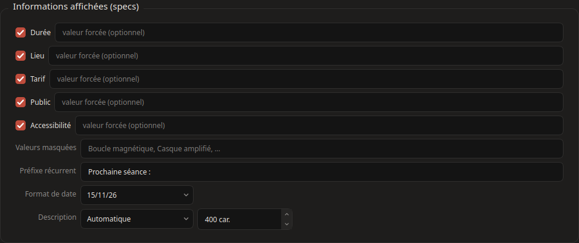
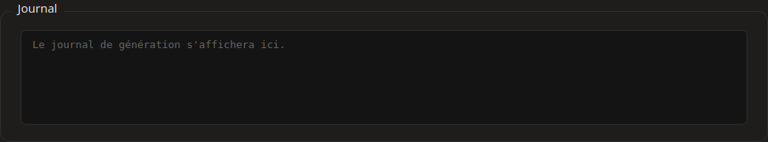

Le bouton Générer (Ctrl+G) relève les événements à venir des Champs Libres et produit les diapos dans le dossier de sortie — une par événement, actualisées à chaque passage (seules les diapos modifiées sont re-rendues).
Planification — « Rafraîchissement auto » régénère toutes les N minutes ; « … et/ou à heures fixes » cale la génération sur des horaires précis (ex. 06:00, 18:30) — cumulables. Les diapos sont aussi à jour au démarrage du poste si « Lancer l'application à l'ouverture de session » est coché (bloc Application).
Diapos générées — quels événements inclure : « Premiers N événements », « Dans les N jours », « Jusqu'au … », « À partir du … » ou « Du … au … ». Un événement en cours (expo permanente…) reste affiché quelle que soit la borne.
Résolution — HD 1920×1080 ou UHD 3840×2160, commune à tous les layouts.
Layouts — « Paysage » pour les TV et écrans ; « Portrait » au choix A4 — impression (carte claire, sobre en encre) ou écran 9:16 (écran pivoté). Les deux jeux sont produits en parallèle dans landscape/ et portrait/ — et chaque destination choisit ce qu'elle reçoit (onglet Destinations).

Source des événements — le site web suffit dans la plupart des cas ; OpenAgenda apporte des données plus riches (description détaillée, intervenants, accessibilité) si vous avez une clé API — repli automatique sur le site si injoignable.

Catégories générées — quels types d'événements produire (une catégorie décochée ne devient pas diapo).

Informations affichées — les specs des diapos : cochez celles à montrer, forcez une valeur (« Clé = valeur » par ligne), ou retirez des items à virgules (ex. Casque amplifié sort la mention d'une liste sans perdre les autres). Le format de la date est configurable (15/11/26, 15/11, sam. 15 nov., samedi 15 novembre) et le préfixe récurrent (« Prochaine séance : ») prévient que la date affichée est la prochaine d'une série.
Description — texte de la diapo : automatique (chapeau), chapeau seul ou longue description, avec borne en caractères — coupée en fin de phrase ou de mot, plafonnée à ce que le gabarit affiche.

Séries éditoriales — « identifiant = Libellé » par ligne : les événements d'une série reçoivent son modèle dédié (badge, slide QR de billetterie sur la diapo du jour).
Le journal en bas d'onglet trace chaque génération — c'est le premier endroit à regarder si un résultat surprend.
